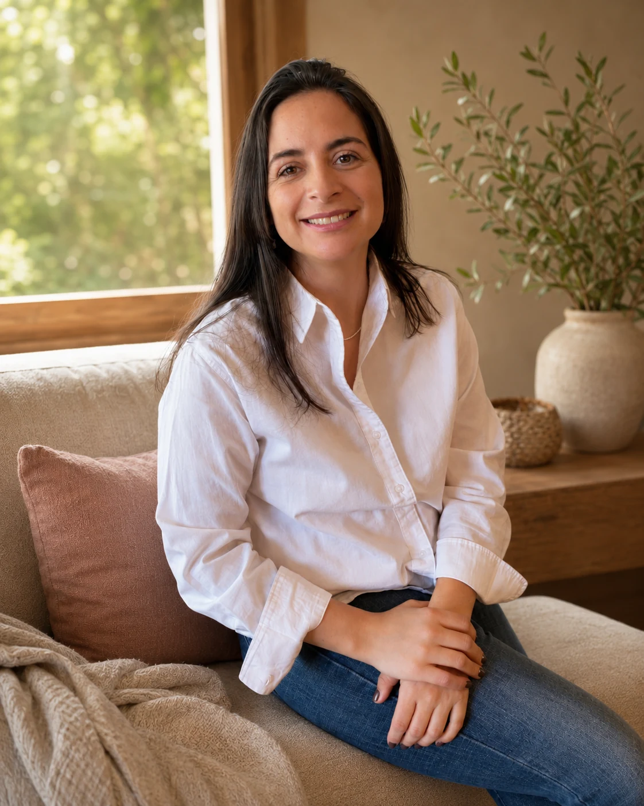

01
Ansiedad · embarazo
Consulté en la semana 22 con una ansiedad que ya no me dejaba dormir. Su forma de escuchar —sin apurar, sin minimizar— me devolvió la sensación de que podía con esto.
Psicología clínica especializada en embarazo, posparto y la transición a la maternidad. Un espacio reservado, sin juicio, con el rigor y la calidez que este momento requiere.

Si reconoces alguna de estas señales en ti o en alguien cercana, consultar a tiempo cambia el curso del proceso.
Reservar primera sesiónImportante. Si estás en crisis o con pensamientos de hacerte daño, llama a *4141 (Salud Responde, Ministerio de Salud) o acude al servicio de urgencia más cercano.
La maternidad transforma. A veces despacio, a veces con una fuerza que nadie anticipó. El embarazo y el posparto son períodos de alta vulnerabilidad emocional donde consultar no es un exceso: es un acto de cuidado.
Mi trabajo es acompañarte con rigor clínico y presencia humana, sin apuros y sin recetas universales. Cada historia se aborda en sus propios tiempos.
Cada uno con protocolos clínicos específicos y con la sensibilidad que este momento requiere.
Miedos, preocupaciones anticipatorias y síntomas ansiosos durante la gestación. Acompañamiento que cuida tu salud mental y la de tu bebé.
Conocer más →Evaluación y tratamiento clínico para la depresión que aparece en las semanas o meses siguientes al nacimiento, con enfoque basado en evidencia.
Conocer más →Cambios de identidad, pareja, rutina y cuerpo. Un espacio para poner palabras a lo que pocas veces se dice en voz alta.
Conocer más →Acompañamiento en pérdidas durante el embarazo, al nacer o en los primeros meses. Con el cuidado y el tiempo que este dolor requiere.
Conocer más →Trabajo sobre el apego, la lectura emocional del bebé y la construcción de un vínculo seguro desde una base realista, no idealizada.
Conocer más →Para madres que atraviesan etapas difíciles sin un diagnóstico específico y necesitan un espacio propio, confidencial y contenedor.
Conocer más →
Soy Francisca Bustos, madre y psicóloga clínica titulada de la Universidad del Desarrollo, con Experto Universitario en Salud Mental Reproductiva y Perinatal de la Universidad de Zaragoza. Trabajo hace más de seis años acompañando a mujeres durante el embarazo, el posparto y la construcción de su maternidad.
Mi práctica combina evidencia clínica actualizada —enfoques cognitivo-conductual, perinatal y sistémico— con una escucha cuidada que entiende la maternidad como un proceso complejo, nunca lineal.
Conocer más sobre mi enfoqueAgendas online en pocos minutos. Eliges modalidad, día y hora que se ajusten a tu rutina.
Una conversación amplia de 50 minutos para conocerte, entender qué estás viviendo y definir un camino de trabajo.
Te propongo un encuadre de trabajo: frecuencia, enfoque y objetivos. Transparente y conversado contigo.
Sesiones de 50 minutos en la frecuencia que definamos, con un seguimiento cuidado y flexible.
Entré pensando que tenía que aguantar más. Salí entendiendo que lo que sentía tenía nombre, tratamiento y dos manos que lo sostenían.
Consulté en la semana 22 con una ansiedad que ya no me dejaba dormir. Su forma de escuchar —sin apurar, sin minimizar— me devolvió la sensación de que podía con esto.
Perdimos un embarazo a las 16 semanas. Nadie sabía qué decirnos. Francisca sostuvo ese duelo con una seriedad que honró lo que había pasado. Nunca sentí que me apuraran.
Creía que algo estaba mal conmigo por no sentir la euforia que todas describían. Trabajamos el vínculo con mi hija desde lo que realmente estaba pasando, no desde lo que debía ser.
Documento de 10 señales basadas en evidencia, escrito por Francisca, para reconocer cuándo lo que sientes en el posparto deja de ser parte del proceso y empieza a pedir ayuda. Te lo enviamos al correo, y también puedes .
Respuestas claras y sin tecnicismos para ayudarte a decidir si este es el espacio que buscas.
Ver todas las preguntasReserva tu primera sesión. Una conversación privada, sin compromiso, para conocernos y decidir juntas cómo continuar.